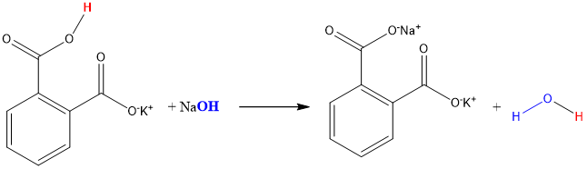
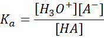
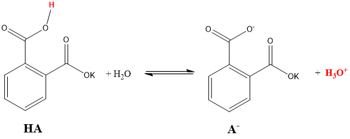
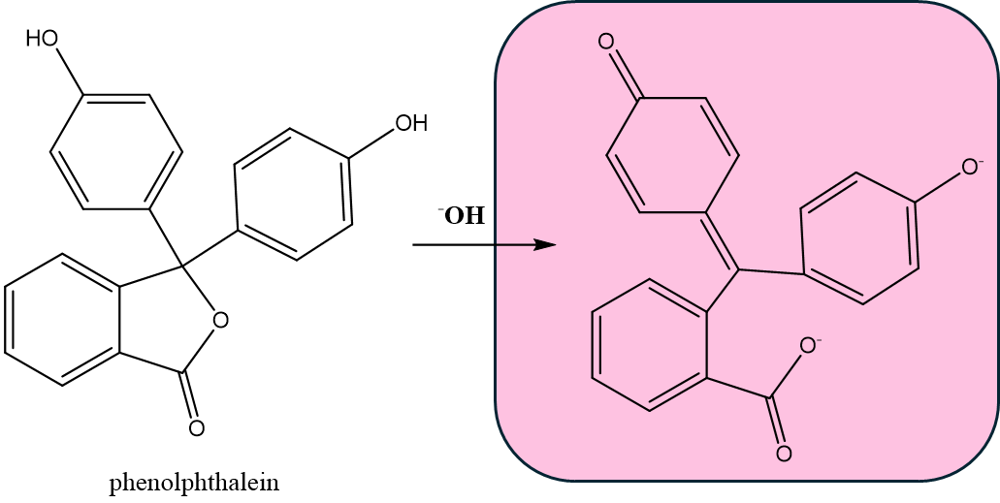
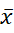

After having completed this lab experiment, students will
Know:
Understand:
Do:
Chemistry: Atoms First from OpenStax, Print ISBN 1947172646, Digital ISBN 1947172638, chapter 14.
In this experiment, you will determine the concentration of sodium hydroxide solution you will prepare in the lab, by titrating an acid, potassium hydrogen phthalate (C8H5KO4). You will also calculate standard deviations (SD) as well as RSD% for your titration results and evaluate uncertainly of your results.
TO DO before coming to the lab:
TO DO during the lab:
TO DO after the lab:
This lab grade is 30 points total. The breakdown for this lab is as follows.
|
Points |
Item |
Requirements |
|
2 points |
Personalized procedure |
Signed by your TA at the beginning of the lab and submitted electronically on MyCourses within 2 days from your lab |
|
5 points |
Pre-Lab quiz |
On-line before the lab starts, to be able to access the Data Sheet and the Report Forms |
|
3 points |
Datasheet |
Signed by your TA at the end of the lab and submitted electronically on MyCourses within 2 days from the lab |
|
20 marks |
Lab report |
Filled-in individually after the lab and submitted on MyCourses in .pdf format within 2 days after the lab |
A titration is an analytical method where we use a known quantity of a reagent (titrant) that reacts completely with the substance , which concentration we want to identify (analyte).
We can only use a titrant that will react completely and irreversibly with our analyte. Since we know the precise amount of the titrant, we can determine the amount of our analyte.
In order to monitor a titration, there are generally two techniques we use to determine the exact point at which our titrant has completely reacted with our analyte.
In this experiment, you will determine the concentration (molarity) of your sodium hydroxide solution by titrating an acid, potassium hydrogen phthalate (KHP). The KHP serves as a primary standard.
A primary standard is a chemical that
NaOH cannot be used as a primary standard because it always contains an unknown amount of water from the atmosphere.
Sodium hydroxide is a hygroscopic solid, which means that it absorbs water from the atmosphere. When you weigh NaOH, it is impossible to be certain what fraction of the weight you measure is actually water. As a result it is impossible to know when we make a solution of NaOH the exact concentration of the resulting solution.
Titration can be used in this instance to determine the exact concentration of the NaOH solution made.
The accurate determination of the molarity of the NaOH solution is called STANDARTIZATION. After standardizing the NaOH solution, this solution will be called STANDARD NaOH solution.
The equivalence point of an acid/base titration is the point at which equivalent amounts (measured in moles) of acid and base have reacted.
Therefore, at the equivalence point for mono-protic acids (A) and bases (B):
nA = nB
In order to determine the equivalence point, a visual indicator is added to the solution to be titrated.
Indicators are specific to particular range of pH. An appropriate indicator will undergo a sharp color change slightly after the equivalence point. In fact, the time between the equivalence point and the color change is negligible, so we consider the color change to happen precisely at the equivalence point.
If we are adding NaOH solution to the acid solution dropwise, the original pH will be < 7 and will rise very slowly as the acid is being consumed. Once there is no unreacted acid left in the solution, the next added drop of NaOH will increase the pH drastically going from pH ~ 8 to pH ~ 10.
The acid-base pH indicator (generic abbreviation: HInd), which is also an acid, will react with this drop of NaOH and change color as it gets deprotonated.
An appropriate indicator has the following characteristics:
A. Neutralization reaction
We will be using the neutralization reaction between a mono-potassium salt of phthalic acid (also called potassium hydrogen phthalate of KHP) and sodium hydroxide to determine the exact concentration of a sodium hydroxide solution you will prepare in the lab.

An acid/base neutralization reaction is the transfer of a proton H+. The acid acts as a proton donor; the base is a proton acceptor. A neutralization reaction always results in a formation of water (H2O) and a salt.
B. Acid dissociation in water
Since we are using a solution of potassium hydrogen phthalate (KHP) in water, there is also an acid dissociation reaction happening. Acids (HA) dissociate in water to give a hydronium ion (H3O+) as well as a conjugated base (A-). Strong acids dissociate completely (100% dissociation), whereas weak acids dissociate incompletely (<100%), meaning there is always some undissociated acid left in the solution.
HA + H2O ↔ H3O+ + A-
Potassium hydrogen phthalate is a weak acid with a pKa of 5.4. pKa is a negative logarithm of Ka and it is indicative of acid strength. Where Ka is an an acid dissociation constant, which in fact is an equilibrium constant for the acid dissociation. It can be expressed through the following general equation:


If we know the pKa and the molar concentration (M) or our acid, we can always calculate the pH of the acid solution using the ICE equilibrium table since the pH = -log[H3O+].
C. Deprotonation of phenolphthalein

The third reaction that is happening during this titration, is a deprotonation (neutralization) of an acid-base indicator phenolphthalein, which turns pink to fuchsia upon the reaction with NaOH (pH > 8.3). The phenolphthalein is also a weak acid with a pKa of . The phenolphthalein will only work as an indicator, if it is weaker than the acid being used in titration.
Neutralization is an irreversible reaction, which means that it can not go back to the acid and base reactants, whereas an acid dissociation is a reversible reaction.
When two reactions are happening at the same time, the neutralization reaction will be consuming the H3O+ ions generated through acid dissociation, thus driving the dissociation reaction to the right/products side (Le Chatelier's principle) until there is no acid left.
We will be calculating standard deviation (SD) to determine the precision and reproducibility of our results. (See Gas Law manual on more information Reproducibility and Accuracy). Small standard deviations indicate that measurements are precise, while imprecise measurements will have higher standard deviations.
If you are performing multiple measurements and you see that the outliers are present in your results, you need to discard them from your calculations, as the presence of an outlier in a titration experiment means that the result from this particular run is unreliable do to a random experimental error.
Standard deviation is defined as the square root of the sum of the deviations squared over N-1:
\begin{equation} s = \sqrt{\frac{1}{N-1} \sum_{i=1}^N (x_i - \overline{x})^2}\end{equation}
Where:
| s | : | standard deviation of the sample |
| N | : | the number of samples |
|  | : | mean value of the trials |
| x1, x2, ..., xi | : | the values from the trials |
If our results follow a normal (Gaussian) distribution, then the probability that a measurement falls within one standard deviation of the mean is 68%. When we calculate the mean of a series of measurements and the standard deviation, we won't be using standard rules for significant figures to determine how many decimal points to use for the average; we will use the standard deviation rules. Generally, it is customary to use ONE SIGNIFICANT FIGURE when reporting STANDARD DEVIATION. It then follows that the average value will be reported to the same number of decimal points as the standard deviation.
For example, if the average molarity of your base is 0.01532 . . . M with a standard deviation of 0.0005 M, you would state your result as 0.0153 ± 0.0005 M .
You will also need to calculate the relative standard deviation (%RSD). The %RSD is generally reported to two significant figures. The relative standard deviation is:
\begin{equation} \%RSD = \frac{s}{\overline{x}} \times 100\% \end{equation}
Where:
| %RSD | : | relative standard deviation |
| s | : | standard deviation of sample |
| : | mean value of the trials |
Important:
You should use the unrounded standard deviation value when you calculate %RSD, otherwise you will get a round off error.
| Item | Quantity |
|---|---|
| 125 mL Erlenmeyer flask | 3 |
| 500 mL Erlenmeyer flask | 1 |
| 100 mL graduated cylinder | 1 |
| 50 mL beaker | 2 |
| magnetic stirring plate | 1 |
| stirring bar | 1 |
| analytical balance | 1 |
| 25 mL burette | 1 |
| tweezers | 1 |
| Laptop for data processing | 1 |
| Chemical | Quantity |
|---|---|
| NaOH solution ~ 0.12 M | 10 mL |
|
Potassium hydrogen phthalate (KHP) 99.5% |
0.175-0.180 g |
|
Phenolphthalein solution |
4 drops |
|
Distilled water |
190 mL |
Caution
NaOH is corrosive. Handle with care and be sure to wear gloves.
A - Phenolphthalein
B - Bromothymol Blue
C - NaOH
D - Phthalic acid
Phenolphthalein is the acid/base indicator used in this lab.
A - HCl
B - C8H5KO4
C - H2SO4
D - HNO3
You used potassium hydrogen phthalate to standardize the NaOH
A - White
B - Clear/Colorless
C - Blue
Phenolphthalein will go from colorless to pink when the pH rises above 8.3
The equivalence point is where you have stoichiometric equivalent amounts of acid and base.
NaOH + HInd -> Na+Ind- + H2O.
Solid NaOH is hygroscopic, and absorbs moisture from the air, making exact weighing very difficult in normal laboratory conditions.